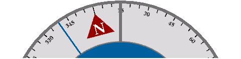

The compass shows either true or magnetic north.
This is indicated by a T or M at the top of the screen.
Tapping the heading switches modes.

Tapping the padlock marks the current bearing on the card. Tapping it again unmarks the card.
Use this to follow a specific bearing.